Process - Data Story #1
Favourite dish
I started with writing down dishes/desserts I like, and the food ingredients that are used to cook them.
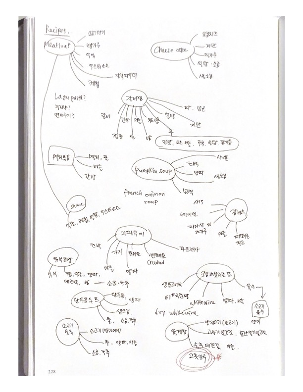The dish I chose was Yukgejang, the spicy meat stew in South Korea. The top ingredient of this dish was powdered pepper, so I decided to research spicy chili peppers.
Questions/Visualizations
Then, I started asking questions such as "What is the most popular pepper in the world? What are the most widely-used peppers? Does consumption vary based on pepper types? Do men and women have different tastes in spicy peppers? In what form are the peppers consumed?"
I also did some sketches of the visualization, such as line charts, bar charts, and maps. I categorized the visualizations into temporal, spatial, and quantitative and questioned what kind of data falls into each different category.
The data
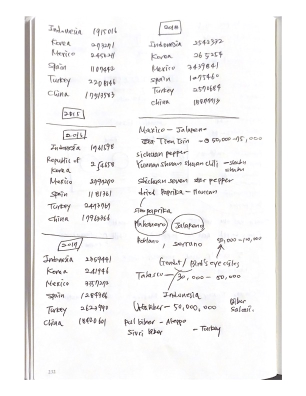For logging the dataset, I used a Google spreadsheet as well as pencil and paper. The above image shows the research of chili pepper production by country.
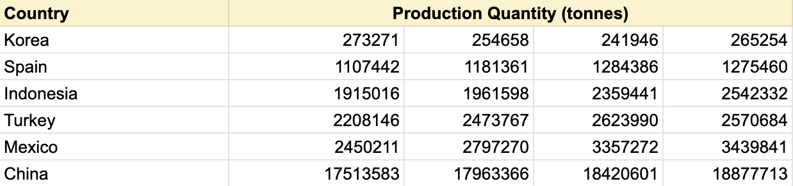 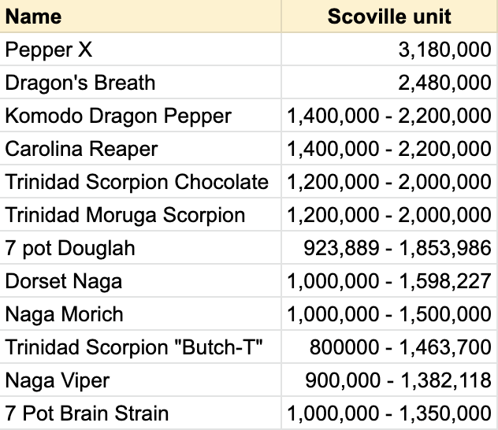 Link to Google SpreadsheetAfter that, I organized the data on Google Spreadsheet. The above charts show the chili pepper production by country and the Scoville units of the top 10 hottest peppers in the world.
Revisions
The two images show the process of how I revised the colour palette of the visualization. Whereas the colours used in the image on the left have little connection with the different Scoville units, the one on the right refers to the level of spiciness by using the gradient: from dark to light.
Here shows a similar process, the colour palette used on the left has no national, symbolic connection to the countries. Rather, I made the countries more distinguishable from each other by using a meaningful colour palette, so that they have a sense of cultural connection.
Process - Data Story #2
Sketches
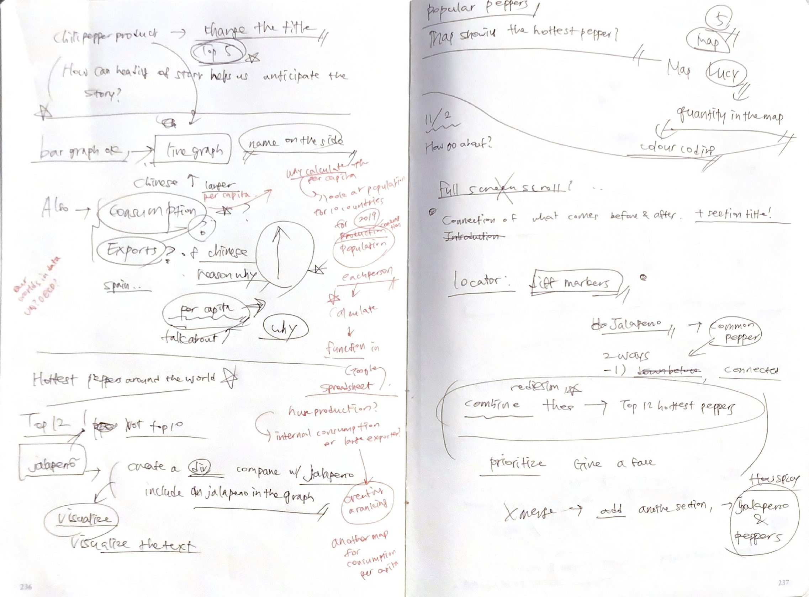
 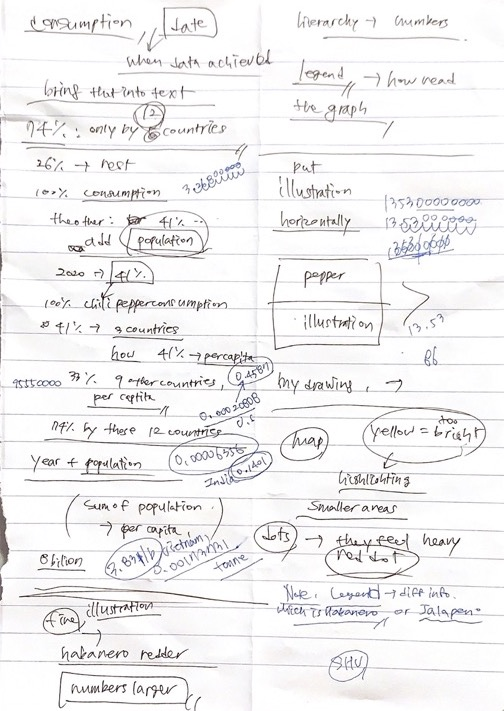
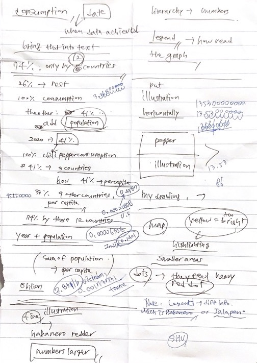
These are the pages I took notes on while revising my data story #1. Notes show some of the minor revisions I decided to make in terms of visualization. I decided to get rid of the bar chart and instead utilize a choropleth map to better show the differences in quantities. There were also some of the information that I decided to include, such as chili pepper imports, exports, and consumption.
Research
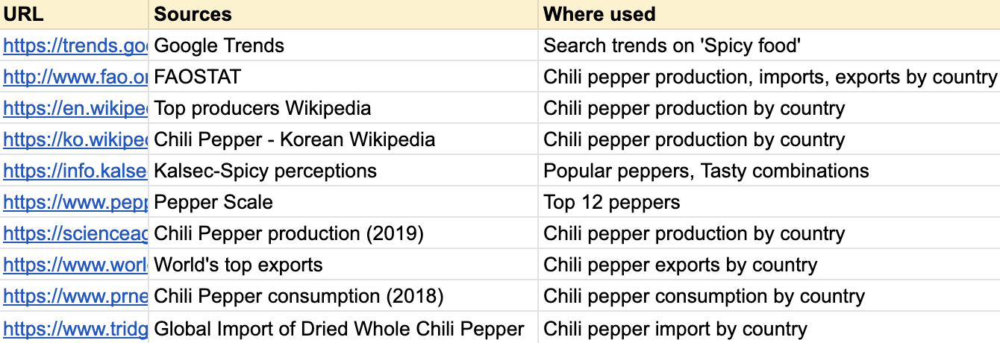Along with revising my data story, I started researching new sources about consumption, exports, and imports of chili peppers. I researched multiple sources and found the most relevant and recent data.
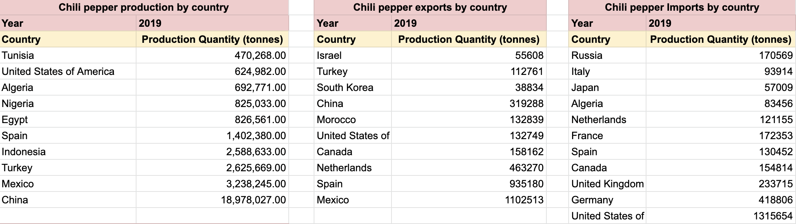After researching data, I logged in information on a google spreadsheet. Whereas I showed the increase of production from 2015-2018 in Data Story #1, this time I found the top 10 production, imports, exports quantities in the world in the year 2019. As for chili pepper consumption, (new section) I decided to use a proportional graph to visualize the data I found, which was a combined proportional share within global consumption.
Visualization
In the section "Top 12 hottest peppers", I felt the need to contextualize them either visually or meaningfully. I made adjustments to this graph to better connect to the image cards below.
Imagecard Imagecard revisionIn image cards, I visualized the spiciness of the peppers by putting the Habanero and Jalapeno reference scale. I photoshopped hand-drawn illustrations with the images on top of each other, to make it easier for the viewers to have a better understanding of the spiciness of the peppers.
Also, rather than colour coding the countries and explaining the quantities using a bar chart, I used a choropleth map to differentiate the quantities of peppers consumed, produced, imported, and exported.
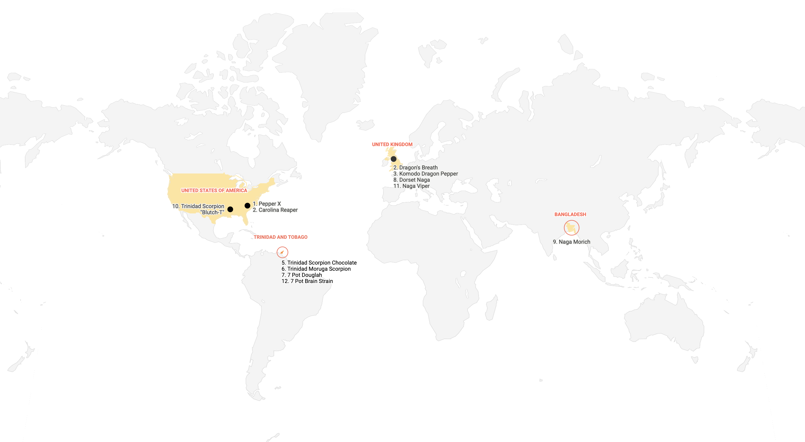 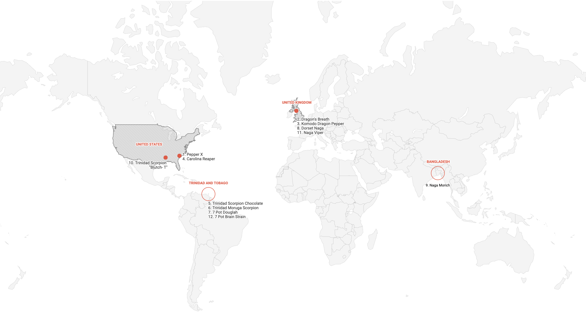To visually show the location of the peppers, I included a locational map in the section. I revised the background colour and the treatment of the text multiple times, for the data to stand out more.